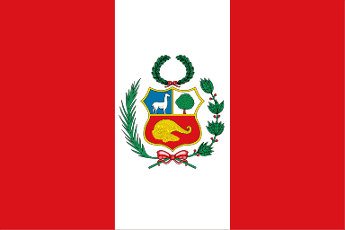

ペルーの基本情報
ペルー共和国は東京から15,000km、飛行機で丸1日近くかかる場所に位置しており、まさに地球の裏側にある国です。南米大陸の太平洋に面した国で、面積は日本の3.4倍、エクアドル、コロンビア、ブラジル、ボリビア、チリと国境を接しています。南北に長く多様な地勢をもつため、年間を通じてほとんど雨の降らない乾燥した砂漠地帯から、標高6000m級の山々が連なるアンデスの高地、ジャングルに覆われたアマゾン河流域の密林地帯まで、変化に富んだ風土と気候がひとつの国に存在しています。ひとつの国でこれだけ多彩な自然環境をもっているため、地域によって全く異なる景色や文化に触れられることが、この国の大きな魅力です。
国旗
一般には左右に赤、中央に白の国旗が使われており、中央に紋章のある国旗はペルーの公的機関で使用されています。
紋章はビクーニャ、キーナの木、山羊の角からこぼれている金貨が描かれており、この国の豊かな自然と資源を表しています。現在のデザインは、1825年に正式な国旗として定められました。

正式名称
ペルー共和国
República del Perú
面積
128万5,216平方キロメートル（日本の約3.4倍）
人口
3,282万人（2020年）
首都
リマ Lima
人口：1,039万人（2018年）
民族構成
インディヘナ（先住民）45％、メスティソ（先住民とスペイン人の混血）37％、ヨーロッパ系15％、そのほか3％
宗教
主にカトリック。先住民の間には伝統的な宗教も信仰されています。
言語
主にスペイン語。山岳地域のインディヘナはケチュア語、ティティカカ湖周辺ではアイマラ語も話されています。